刪除虛擬機是可以選擇只移除機器不刪除虛擬硬碟，然後在重新掛上去，本篇將介紹如何掛上去
1.想要刪除已建立好的虛擬機，在建好的機器列表上右鍵 → 移除，選擇移除後會詢問刪除所有檔案或是只移除，選擇只移除虛擬硬碟檔案會留著可以下次再掛載出來
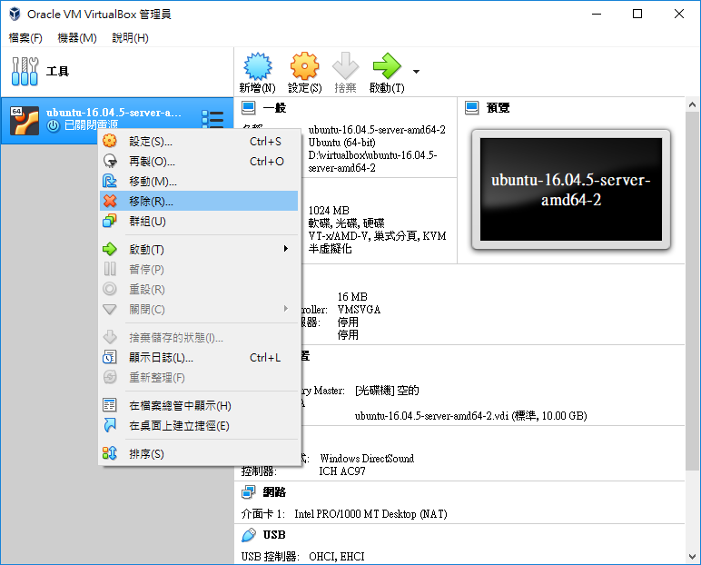
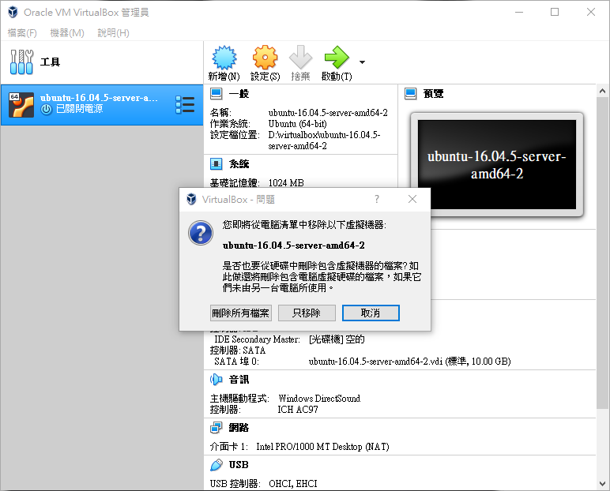
2. 點選新增來增加虛擬機器

3. 名稱：命名，機器資料夾：設定好想要放虛擬機檔案的地方，類型：選擇想要的系統，版本：選擇系統版本
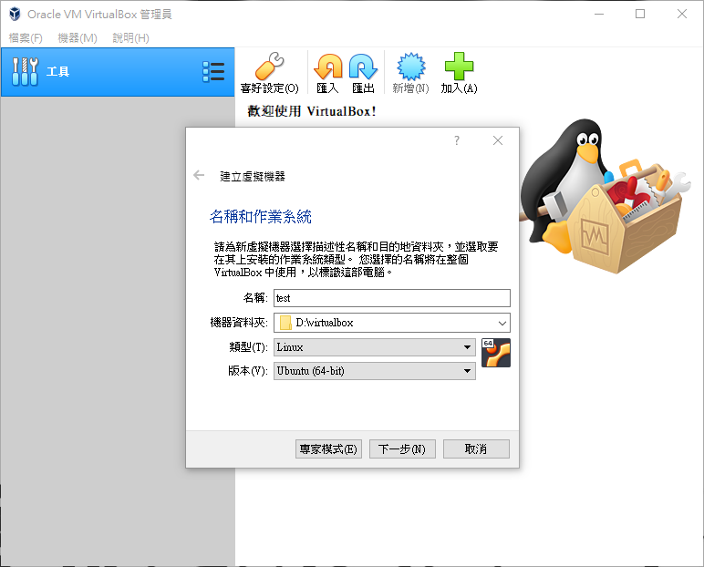
4. 設定記憶體大小
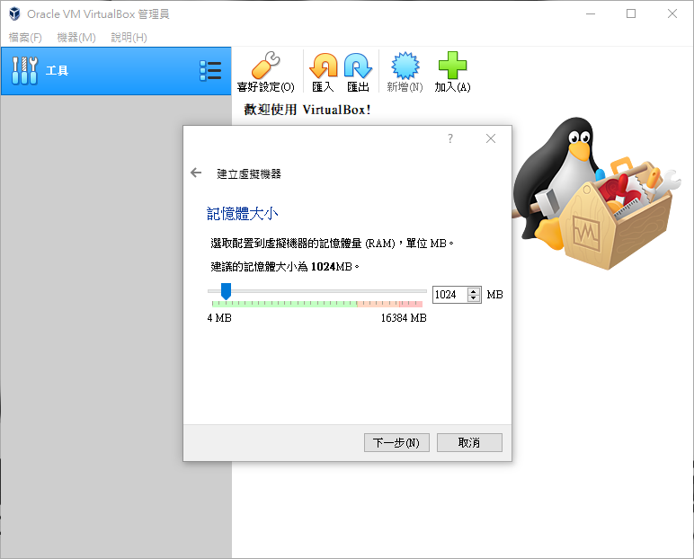
5. 選擇使用現有虛擬硬碟檔案，然後點擊右邊資料夾圖案
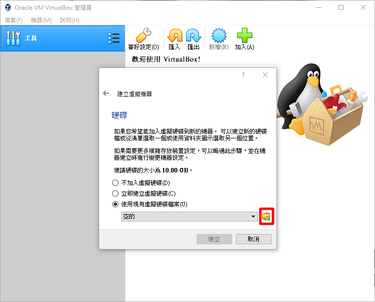
6. 點選加入，到放設定機器資料夾路徑下，選擇 vdi 虛擬硬碟
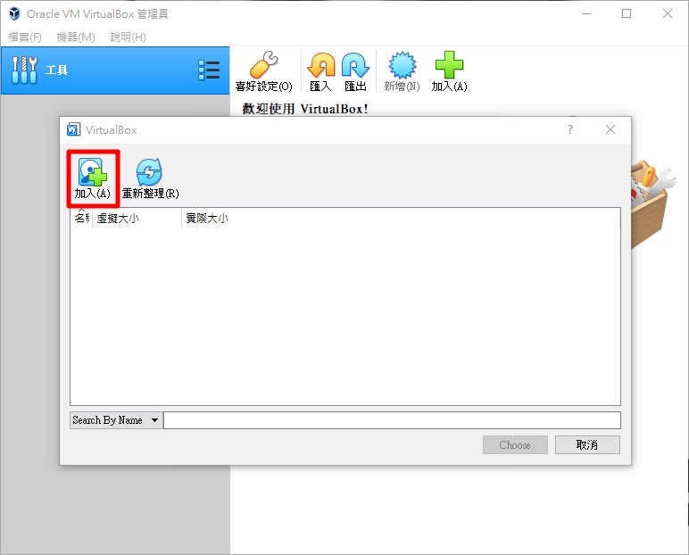
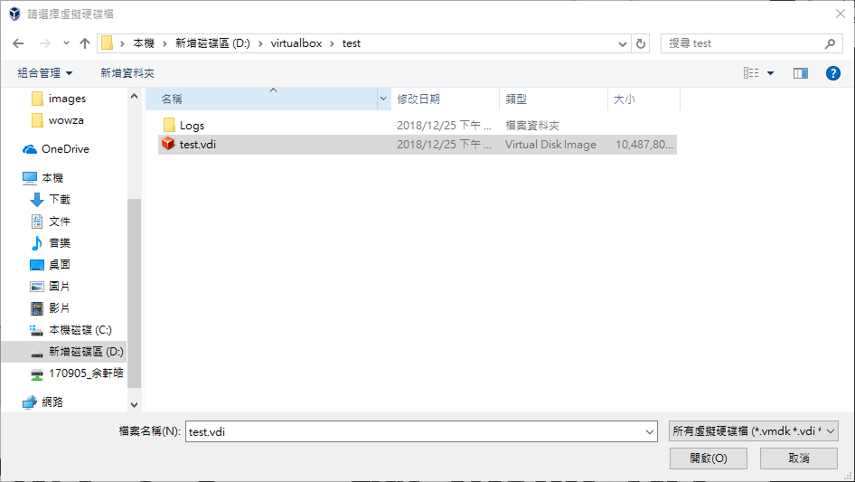
7. 點選 vdi 虛擬硬碟，再點選 Choose
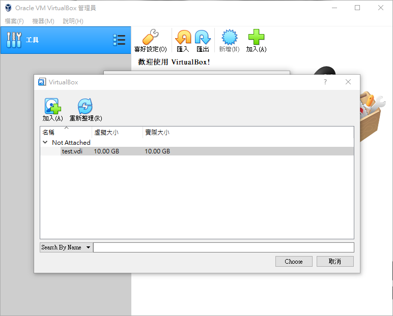
8. 點選建立
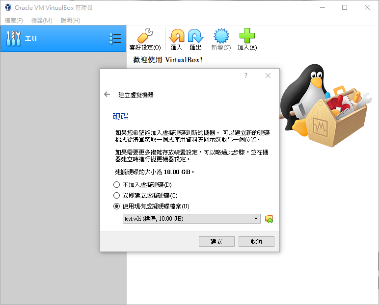
9. 點選啟動，然後第一個選項開啟 ubuntu
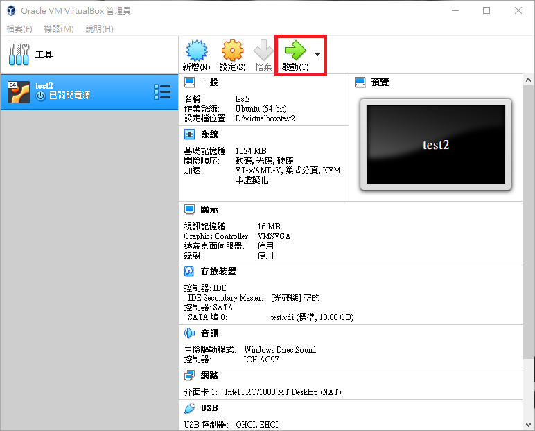
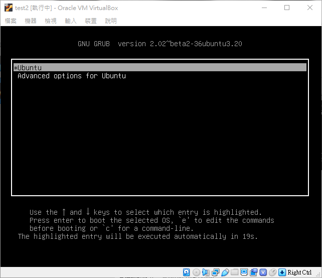
10. 如圖虛擬硬碟掛載成功
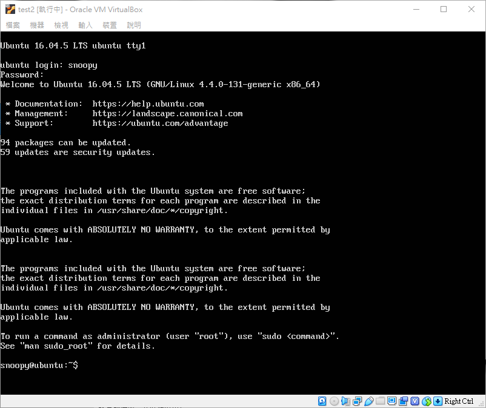
PS. 使用此方法並不是複製只是在把同一個虛擬硬碟再掛上去，因此同時啟動同一個 vdi 會出現錯誤訊息，想要有多個同樣虛擬硬碟要使用再製方法，下篇文章會介紹
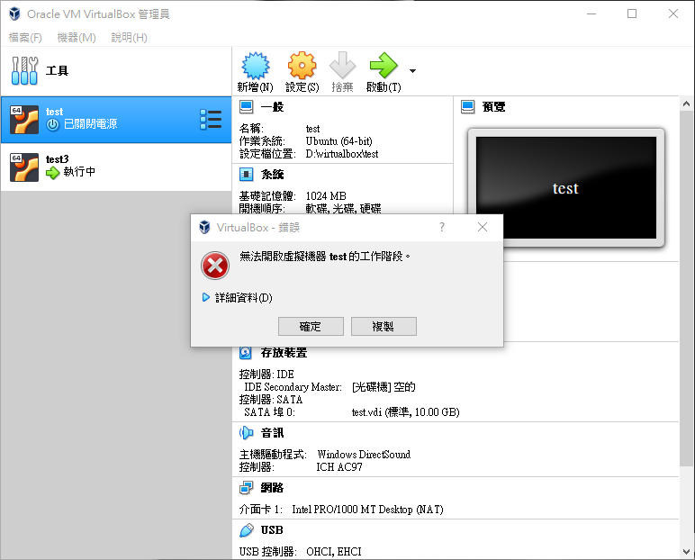